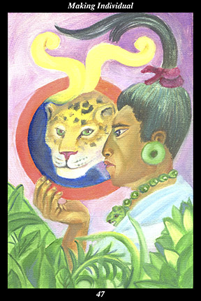

 | IMAGEAt the edge of the rain forest, a male warrior wearing a jaguar necklace gazes into a mirror from which smoke arises. Within the smoking mirror, the warrior’s reflection takes the form of a jaguar. |
INTERPRETATION
This hexagram depicts the individual who both steps outside the flow of the generations and unites them. The male warrior symbolizes the way of testing and training human nature that increases its versatility and fortitude. The jaguar necklace symbolizes your true self united with the lineage of spiritual ancestors and living descendants. The smoking mirror symbolizes the work of self-reflection required to see through all our roles and pretences in order to see our true self. That his reflection takes the form of a jaguar means that the true self blends into its surroundings so as to avoid drawing attention to its actual movements. That he stands at the edge of the rain forest means that the encounter with the true self occurs spontaneously and naturally once the desert of aloneness and self-discipline has been crossed. Taken together, these symbols mean that you embody the true self, free of artifice, self-interest, or compulsions.
ACTION
The masculine half of the spirit warrior steps out of the stream of evolution in order to divert it back into its original course. When we see the great work of the first creative forces to give spirit a form in matter and then in life and then in consciousness, we bear witness to the vast stretch of time that enfolds the world in the first ancestors’ vision: out of the single original act of creation arises this form before our eyes that continues to come ever closer to reflecting its formless spirit. But even as the world of form moves toward more perfectly expressing the world of spirit, its evolution is continually threatened by forms that gain dominance through the imbalances and disharmony they create. Because they divert the great work from its original course of evolution, the influence of these destructive forms must continually be counteracted by the influence of those creating balance and harmony. It is impossible, however, to identify these destructive forms of matter, life, or consciousness with certainty during the course of one’s lifetime since it is only from the vantage point of history that such conclusions can be reached. For this reason, we do not react against other forms based on our own judgments and preferences: we act, rather, from the perspective of the true self, whose only goal is universal evolution toward perfection. Although the true self is inherent within every individual, it is dormant and dreamlike until we fully awaken to its presence—until we fully awaken to the presence of spirit in this matter, this life, this consciousness. Such awakenings of the true self, whose essential nature is the same everywhere, are how individuals become able to step out of the stream of evolution and know spontaneously and naturally the proper actions to help bring it back to its original course. Now is the time for considering the grand scope of creation and the place your actions have in it. It is not necessary to force decisions—simply pursue self-knowledge, put it into daily practice, and follow the true self’s vision. Let go others’ opinions and you succeed beyond measure.
INTENT
To be an individual means, in part, to no longer be unduly influenced by others—a state that is attained by stripping away all the social conditioning we have accepted since birth. But this state merely initiates true individuality, which is fashioned from all the subsequent decisions we make on our own. In particular, the sense of responsibility for others, as well as the deep-seated desire for companionship and community, appear to be essential values of the true self. Consciously deciding to pursue the goals and values of the true self means that we continue doing many of the things we did before awakening to the presence of the true self—we just do them differently. We act with a higher purpose in mind, we derive a deeper meaning from our experiences, and we bring a greater quality of
benefit to the lives of others. In this way, true individuals are more profoundly a part of their surroundings than those in whom the true self yet dreams.
SUMMARY
Reflect on the choices you have been making recently. Observe how they have been adding up to something not quite defined and leading you in an unforeseen direction. Look at these choices as the soul decisions forging your unique destiny. See yourself as your soul sees you—how is this lifetime of yours different from all others? Of all the flowers in the world, why this one?
THE LINE CHANGES
1° The window of opportunity opens—from the very beginning you display all the signs of one intent on accomplishing great things. You are an intrinsic part of the times and perfectly attuned to the needs and drives of your contemporaries. Take care to balance your intellect with loving-kindness.
2° Your strong will and mercurial temperament are tempered by the self-sacrificing character of your loved ones. Learning generosity and patience from these relationships, you cultivate a sincere demeanor of humility. Those closest to you are proud of your shining character.
3° It is your instinct to press ahead with this opportunity even though it means a leap into unknown waters. For some reason, this complete departure from past experience seems natural and right. This is the sense of discovery and adventure that makes your future accomplishments inevitable.
4° Fascinated with learning new things in order to help others, you gain the trust and confidence of all. It is easy to lose one’s humility in the heady air of success, so keep your feet on the ground and hold firm to ethical conduct every moment. Do not expect everyone to be as ambitious as you.
5° Your inclination to be as critical of others as you are of yourself is tempered by the support and loyalty of your allies. Where others might stumble beneath the weight of responsibilities, you redouble your efforts. In this way your cultivated character becomes as great as your innate talents.
6° Do not rest on your past accomplishments—although the hour seems late, your most meaningful work lies ahead. With the help of strong allies, the pinnacle of your monument pierces the highest clouds. Helping people clear away long-standing ills, you are bathed in the glow of homecoming.